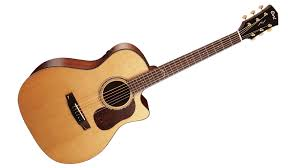

Gitar Hakkında
Gitar geçmişi 4000 yıla kadar uzanan eski ve soylu bir enstrümandır. Gitarın soyu hakkında bir çok teori vardır ve genelde ud’un ve hatta eski Yunan çalgısı olan kithara’dan geldiği iddia edilir. Ancak 1960 yılında Dr. Michael Kasha tarafından yapılan araştırma bu iddiaları çürütmüştür. Dr. Michael Kasha’nın araştırmasına göre ud ve gitar ortak ataları paylaşıyor olmalarına rağmen ayrı bir gelişimin sonucu ve gitarın evrimine bir katkısı olmamıştır. Ancak ters yöndeki etkisi de yadsınamaz – gitarın ataları Moors’un İspanya’ya getirdiği ud’un perdesizden perdeliye evriminde çok büyük etkisi olmuştur. Kithara teorisi için tek kanıt Yunan sözcüğü “kithara” ile İspanyolca kelime “guitarra” arasındaki benzerlik. Gitarın tamamen farklı türde bir enstrüman olan kithara’dan evrimleştiğini hayal etmek oldukça zor. Yani bir kare çerçeveli kucak harp ya da lir. Kare çerçeveli yedi telli bir kucak enstrümanı olan arpın eski İspanyolcada 4 telli gitara adını vermiş olması da ilginç bir geçiştir ayrıca. Dr. Kasha Yunanlıların “kithara” ismini nereden edindikleri sorusu etrafında dönmektedir ve eski Yunan kitharası yurtdışından getirildiğinde 4 telliydi. Dr. Kasha 4 telli çalgı olan chartar’ın Farsça adının hellenified olduğunu düşünmektedir. Arkeologlar tarafından bilinen en eski telli enstrümanlar çanak arplar ve tanburlardır. Tarih öncesi insanlar çanak arpları gövde için kaplumbağa kabuğu ve su kabağı, sap için eğilmiş sopa ve teller için bağırsak ve ipek kullanıyorlardı. Dünyada ki pek çok müze Sümer, Babil ve Mısır uygarlıklarından kalma bir çok arp bulundurmaktadır. 2500-2000’li yıllarda daha gelişmiş arpler görülmeye başlandı. Örneğin gösterişli bir şekilde oyulmuş 11 telli altın işlemeli bir arp Kraliçe Shub-Ad’ın mezarında var. Tanbur genellikle tahta yuvarlak veya kavisli gövdeli uzun saplı ve telli bir enstrüman olarak tanımlanır. Tanbur muhtemelen daha çok nota sığdırılabilsin diye kase arpın boyun kısmı olarak geliştirildi. Mısır’daki mezar resimleri ve taş oymalar tanbur ve arpın 3500-4000 yıl önce birlikte çalındığına şahitlik ediyor (flüt ve vurmalı çalgılar ile tanbur ve arp).
Mısır Duvar Boyaması, Thebes, M.Ö. 1420
Arkeologlar ayrıca antik Pers ve Mezopotamya kültürlerinden kalma birçok benzer emanet buldu. Türk sazı, Balkan tamburista, İran setar, Afgan panchtar ve Yunan buzuki gibi bölgenin halk müziğine tanıklık etmiş birçok enstrüman hemen hemen değişmeden günümüze kadar gelebilmiştir. Gitara benzeyen en eski enstrüman 3500 yaşında ve son klasik gitar! Mısırlı şarkıcı Har-Mose’ye ait. Mose, M.Ö. 1503 yılında tanburu ile birlikte gömüldü. Har-Mose’nin enstrümanında 3 tel ve kordon ile boyuna asılı bir mızrap vardı. Gövdesi sedir ağacından yapılmış cilalı ve ham deri ses tablasından oluşmaktadır. Kahire’deki Arkeoloji müzesinde bugün görülebilir.
Gitar Nedir?
Gitarı tanımlamak, gitarı tambur ailesinin diğer üyelerinden ayırt etmek için oldukça önemlidir. Dr. Kasha’nın tanımına göre; uzun perdeli boyunu olan düz ve ağaçtan ses tablası olan ve düz sırtı olan ve genelde yanları (beli) eğimli olan enstrümandır. Gitarın tüm temel özelliklerini gösteren en eski ikonografik gösterimi 3300 yıllık Hitit gitarına ait olmakla birlikte Alaca Höyük Türkiye’dedir. Ud İspanya’ya ud’u Moors (bu kelime ile anladığım kadarıyla ortaçağ Müslümanlarını, Endülüs Emevilerini kastediyorlar) getirmiştir. Tanbur Arap ülkelerinde kendi gelişim çizgisini almıştı; değişik orantılara sahip ve perdesiz. Avrupalılar perde ekleyip “lute” olarak adlandırmışlar, Arapça “Al’ud” (anlam olarak odun) kelimesi İspanyolca da “laud”a evrilmiş. Ud kısa saplı (boyunlu), çok telli, büyük armut biçimli gövdesi ve sırt kısmı yüksek eğimli, keskin açılı ve ayrıntılı pin başına sahip olan enstrüman olarak tanımlanıyor.
Arthur Robb Rönesans Dönemi Lavta
Gitar kelimesi eski Sanskrit kelimesi olan “string”-“tar” kelimelerinden gelmiştir (Asya’nın merkezinde ve Hindistan’ın kuzeyinde gelişmiş bir dil). Arkeolojik çalışmalar bu bölgedeki birçok folklorik telli enstrümanın varlığını ve binlerce yıldır neredeyse hiç değişmeden kaldığını gösteriyor. Birçoğunun ismi “tar” ile bitiyor ve tel sayısına göre isimlendiriliyor. Dotar: Türkistan’da bulunan 2 telli bir enstrüman. İki= Sanskrit “dvi” - modern Farsça da “do”. Setar: İran’da bulunan 3 telli enstrüman (Hindistan’da sitar daha fazla tel titizlikle eklenip geliştirilmiş). Üç= Sanskrit “tri” modern Farsça da “se”. Yazıda bahsettiğimiz gibi gitar Avrupa’ya Mısır ve Mezopotamya bölgesinden gelmiştir. Ve erken zamanlarında 4 telliydi (bir önceki bölümde bahsettiğimiz gibi gitar kelimesi eski Farsça “chartar”ın bir türevi ve anlamı dört telli anlamına geliyor. Bu türde birçok enstrüman ve türevleri (3-5 telli) ortaçağ el yazmalarında ve Roma zamanından kalma kilise ve katedrallereki taş oymalarda görülebilir.
Chartar (Tar)
Arp ve tanburlar eski zamanlarda gezginler, tüccarlar ve denizciler sayesinde dünyaya yayılmıştır. 4 telli olan Chartar (ince belli!) şekil ve yapımıyla değişeceği İspanya’ya ulaşmıştır ve burada teller tek tek yerine hep birlikte ayarlanmış ve quitarra ve modern gitar doğmuştur. 5. tel sonradan eklenmiştir. Yüzyıllar sonra 6 telli gitar 19. yüzyılda inşa edilmeye başlandı. 19. yüzyılın sonlarına doğru, ilk defa, bir çalgı 6 tel ile çağdaş gitar müzik arayışlarına yön verdi. 19. yüzyılda çalgının “gitar” olarak anılmaya başlanmasının temel sebebi Arap kültüründen kalma enstrümanların (ud, setar vb.) çokça kullanılıyor olması ve tüm bu enstrümanların temel tınılarının benzerliği. Gitar tarih boyunca çok sesli olarak çalınmasına neden olmuş ve çağdaş gitar ile birçok müzik türünde kullanılmaya başlamıştır.